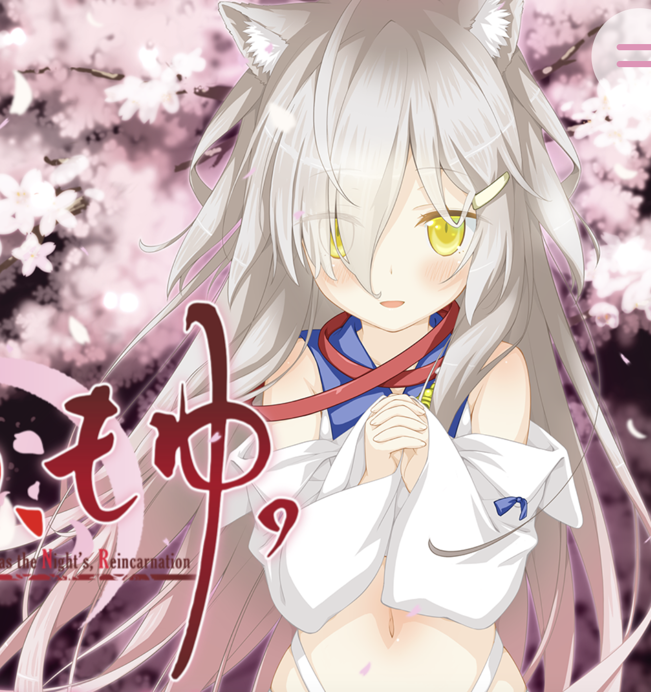

さくら、もゆ。 -as the Night's, Reincarnation(さくらもゆ)は2019年1月31日にFAVORITEより発売された18禁恋愛アドベンチャーゲームである。 「はるのあしおと」に続く6番目の傑作で2024年の最高評価作品。また全作品中の最高評価作品でもある。
Sakura, Moyu
世代: Gen8.0
ジャンル: ファンタジー/魔法少女/ループもの
作品評価:
OP評価:
プレイ時間:60時間00分(144話相当)
制作会社: FAVORITE
視聴開始日: 2024-10-1
視聴終了日: 2024-12-6
親作品(系統): 未分類
ーありがとう。 きみがこの世界に生まれてきてくれて、本当に、よかった。
ーこれは、"魔法少女"のための物語だ。
ー春。
さくら咲き乱れる出会いと別れのその季節。
かつて、人類の未来を救った少女たちは、今はもう”魔法”を忘れ ーーごく普通の少女として生きていた。
誰もが当たり前に遭遇する、ごくごくふつうの当たり前な困難に頭を抱え、迷い、生きる道を探してた。
「ーお願いします」
少年、奏大雅は、もうひとつの春と再び出会った ーー
「お願いします。どうか私を、魔法少女に戻してください」
これは”魔法少女”のための物語 ーー。
なんかでは、ない。
これは、幸せを探し出すための物語。
これは、あなたの人生のための、物語。
さくらもゆ ”夜” の中 ーー。
もう二度と、君が悲しまなくてもいいように ーー
さあ、引き金を引け、たったひとりの君を救うため
俺は、俺は何度だって、散りゆくのだと ーー
オープニング映像及び音楽。当初より期待され130番[five-number]として採用された。また、同作の購入金額である￥9000は単体の作品としては史上最高額。
「これはあなたの人生のための物語」
前半から中盤、後半にかけてどんどん面白くなっていく隙のほとんどない史上最高傑作。千和ルート終盤/第2OPの盛り上がりがずば抜けているだけでなく、
ハル√の安定感も異常に高い。クロルートは言わずもがな。